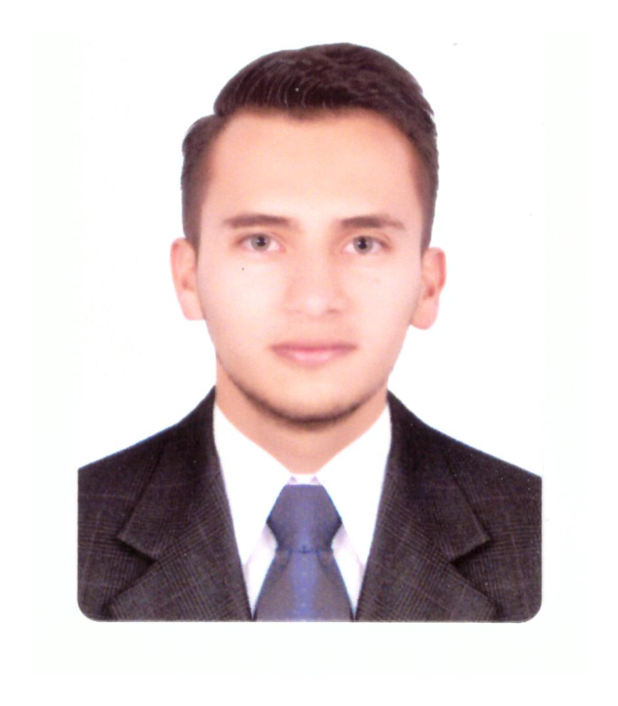

Perfil Profesional
Estudiante de Ingeniería electrónica en terminación académica con materias culminadas y en proceso de titulación,tomando como opción de grado la especializacion en Gestion Estrarégica de Proyectos con experiencia en el área de las telecomunicaciones brindando apoyo técnico en proyectos para grandes, medianas y pequeñas empresas interactuando con las diferentes segmentos que apoyan el desarrollo de los proyectos como convenios con terceros, planta externa y soporte e implementación , también en el área de instrumentación y control apoyando proyectos de instrumentación, estructuración de ingeniería básica e ingeniería de detalle en Plantas PTAP y PTL.

Estudiante proactivo , altamente capacitado, responsable, eficiente, honesto y comprometido con cada una
de las labores a desempeñar, disciplinado, dispuesto al aprendizaje continuo; capaz de trabajar en equipo
y bajo presión cumpliendo de manera efectiva con metas y objetivos trazados.
Educación
- Ingeniería Electrónica.
- 2012-2019, Universidad Pedagógica y Tecnologica de Colombia
Experiencia profesional
- Ingeniero Preventa.
- Claro Colombia (Práctica Empresarial).
- Telecomunicaciones.
- ago/2019-dic/2019.
- Auxiliar de Ingeniería.
- B&C Biosciences Ltda.
- Automatización y Control.
- dic/2019-enero/2020.
Otros
- e-learn:
- Introduction to Cloud Computing.
- Curso Profesional de Python.